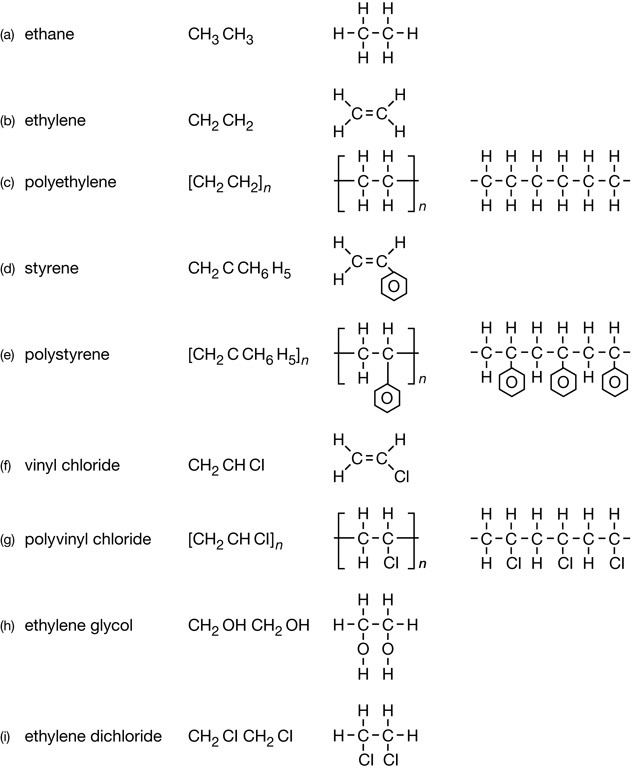

Module 6—Petrochemicals
 Read
Read
Read pages 414–416 in the textbook.
 Try This
Try This
Identifying Additional Perspectives
It appears that you are living in the “Age of Oil” but, given that petroleum reserves are not infinite, there is a great deal of concern about what is being done with the resources that remain. Retrieve the document you created earlier in this lesson to record perspectives, evidence, and arguments on whether society should be saving more fossil fuels for future use as petrochemicals.
TR 3. Use the Internet to find more information on this subject. Remember to include audio and video from respected sources in your search to make sure you find documentaries and programs of interest. Try the search term “audio + CBC + age of oil” in a search engine. Review one of the websites your search returns. In your document, record the perspectives introduced and the supporting evidence and arguments. Save your work in your course folder.
 Self-Check
Self-Check
As you found in the last module, the ability to represent organic molecules as chemical structures is very important.
SC 3. Complete “Section 10.1” question 1 on page 416 of the textbook. You may wish to use molecular models when completing this question. If you are using materials in your home or classroom to build your models, remember that each carbon atom makes four bonds, each hydrogen and chlorine atom makes one bond, and each oxygen atom can make two bonds to other atoms.
SC 4. Complete “Section 10.1” question 2 on page 416 of the textbook to add to your research on the petrochemical industry and the use of petroleum. What perspective is represented in this question?
Self-Check Answers
Contact your teacher if your answers vary significantly from the answers provided here.
Sc 3.
Section 10.1 1.

SC 4.
Section 10.1 2.
- For every 11 jobs in an ethene plant, 17 700 potential jobs are created.
- When ethane-containing natural gas is exported, the jobs in the ethane plant and those generated by the multiplier effect are also exported.
- The cost of ethane to plants will increase as will the cost of ethane products to consumers. The reduced availability of ethane will result in a lower supply of products made from ethane, possibly further increasing the price of the products. The high cost of these products would eventually result in a lowered demand for them and, therefore, job losses in the industry.
 Discuss
Discuss
© TebNad/shutterstock
Is society close to running out of crude oil? What will be the consequences when the crude oil supply is depleted? In this lesson you have been exposed to different perspectives on these questions.
D 1. Write a few paragraphs about your opinion on these questions, and post them to the discussion area for your class. Read the responses of at least two other students. Compare those responses to your own, and identify similarities and differences between them. Save a copy of your opinion and the similarities and differences you identified in your course folder.
 Module 6: Lesson 1 Assignment
Module 6: Lesson 1 Assignment
Retrieve your copy of the Module 6: Lesson 1 Assignment that you saved to your computer earlier in this lesson. Complete the Assignment and save it in your course folder. You will receive information later in the lesson on when to submit your work to your teacher.